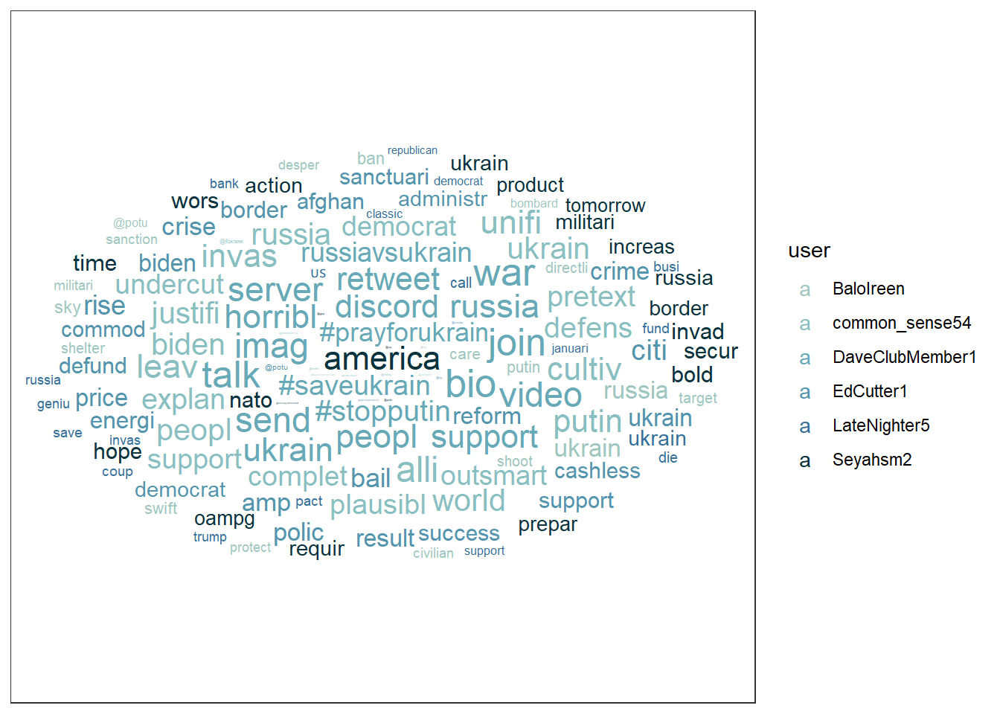
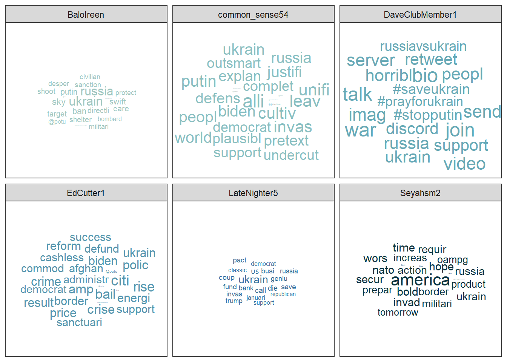
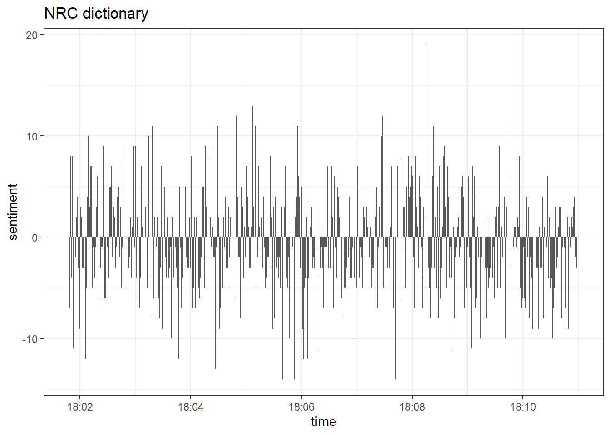
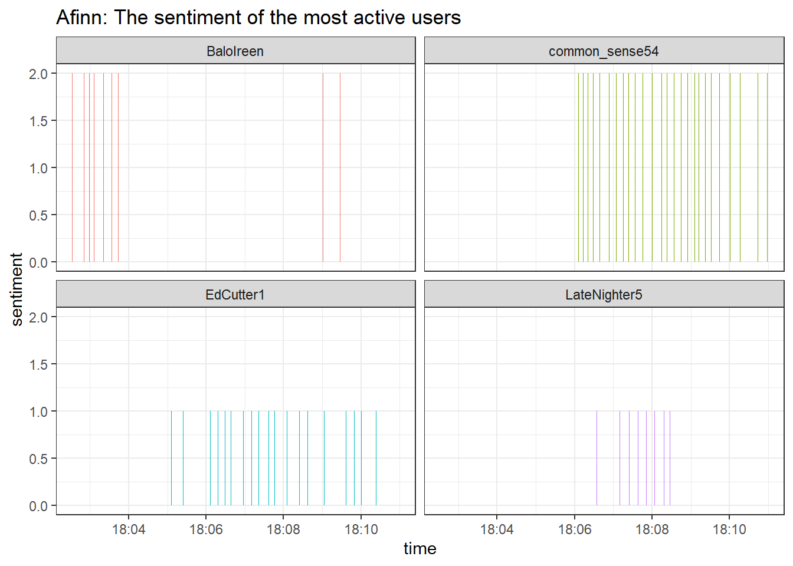

7 Tidy text analysis
After working through Tutorial 7, you’ll…
- understand the concept of tidy text
- know how to combine tidy text management approaches with regular expressions
- be able to produce first analyses, e.g., word frequencies
7.1 What is tidy text?
Since you’ve already learnt what tidy data is (see Tidy data), you can make an educated guess about the meaning of “tidy text”! In contrast to the ways text is commonly stored in existing text analysis approaches (e.g., as strings or document-term matrices), the tidy text format is a table with one single token per row (token = the unit of analysis). A token is a meaningful unit of text, i.e., a word, a sentence, or a paragraph that we are interested in using for further analysis. Splitting text into tokens is what we call the process of tokenization.
Julia Silge and David Robinson’s tidytext
package
makes tokenizing into the tidy text format simple! Moreover, the
tidytext package builds upon tidyverse and ggplot2, which makes it
easy to use for you, since you already know these packages (see
Tutorial: Data management with tidyverse and Tutorial: Data
visualization with ggplot for a recap). That’s why we’ll focus on the
tidytext in this breakout session.
This tutorial is based on Julia Silge and David Robinson’s open-access book “Text Mining in R. A Tidy Approach” and a lot of the following code was actually written by Julia Silge. If you want to dig deeper into tidy text analysis, you should check the book out. Both authors have also created an informative flowchart of the tidy text analysis workflow:
| Image: Tidy Text Analysis Workflow |
 |
Before we start, install and load the tidytext package, the
tidyverse package & the lubridate package. lubridate will convert
dates to a standard format, making it easier to create graphs using time
data. Since tweets come with a date column, it’s always useful to have
the lubridate package loaded.
# installing/loading the package:
if(!require(tidytext)) {
install.packages("tidytext");
require(tidytext)
} #load / install+load tidytext
# installing/loading lubridate:
if(!require(lubridate)) {
install.packages("lubridate");
require(lubridate)
} #load / install+load lubridate
library(lubridate)
library(tidytext)
library(tidyverse)7.2 Preprocessing real-world data
Let’s investigate what the tidytext package is capable of and apply it
to some real-world data. I’ve provided you with a data file that
contains data collected with the Twitter API about the Russian
aggression against Ukraine on Moodle.
Let’s import the data into RStudio and inspect it using the View()
function.
data <- read.csv("ukraine_tweets2.csv", encoding = "UTF-8") # Use UTF-8 encoding to keep the smileys
Sys.setenv(TZ="UTC") # Twitter gives a UTC timestamp, so we'll need to set our own environment to UTC, too
data <- data %>%
mutate(time = lubridate::ymd_hms(time)) %>% # turn the data column into a proper format with the lubridate package (this helps to create time series graphs!)
tibble()
View(data)This data set contains a lot of information! We get to know who wrote the tweet (user and the unique user.id) and where this person lives (user.location). But most importantly, we can find the text of the tweet in the column full_text.
First of all, let’s reduce some of these columns that we don’t need for our text analysis.
data_short <- data %>%
select(time, user, full_text) # keeps time, user, and full_text
View(data_short)Now, to get an overview, let’s create a visualization of the user’s who posted at least 18 tweets.
data_short %>%
group_by(user) %>%
summarize(n = n()) %>%
filter(n > 18) %>%
ggplot(aes(x = user, y = n)) +
stat_summary(geom = "bar") +
theme_bw() +
theme(axis.text.x = element_text(angle = 90, vjust = 0.00, hjust = 0.00)) +
labs(title = "Users who posted the most tweets about the Russian\naggression against Ukraine",
x = "User name", y = "Number of Tweets")
Now that we have had our overview, we will start with a process called text normalization. Text normalization is the endeavor to minimize the variability of a text by bringing it closer to a specified “standard” by reducing the quantity of divergent data that the computer has to deal with. In plain English, this means that our goal is to reduce the amount of text to a small set of words that are especially suitable to explain similarities and differences between tweets and, more interestingly, between the accounts that have published these tweets. Overall, text normalization boosts efficiency. Some techniques of text normalization will be covered in the next few sections, for example, tokenization, stop word removal, stemming/lemmatization and pruning. You could add additional steps, e.g. spelling corrections to reduce misspellings that increase word variance, but we won’t cover all text normalization steps in this tutorial.
7.2.1 Tokenization
I think we are ready to tokenize the data with the amazing
unnest_tokens() function of the tidytext package. Tokenization is
the process of breaking text into words (and punctuation marks). Since
scientists are almost never interested in the punctuation marks and will
delete them from the data set later anyway, unnest_tokens() comes with
the nice bonus of setting all text to lowercase and deleting the
punctuation marks directly, leaving only words (and numbers) as tokens.
We will use the highly specialized token = "tweets" option of the
tidytext package (by Mullen
2016),
which preserves hashtags and mentions of users with the @ sign from the
direct punctuation removal process performed by unnest tokens().
Another common practice is to remove all tokens that contain numbers. Depending on the research question, it can also be helpful to remove URLs. For illustrative purposes, we will do both. But keep in mind that removing all URLs will take the option from you to compare what accounts have shared certain URLs more frequently than others.
remove_reg <- "&|<|>" # & = & in HTML, < = < in HTML, > = > in HTML
data_tknzd <- data_short %>%
mutate(tweet = row_number()) %>% # creates a new column that is called "tweet", which contains a unique id for each individual tweet based on its row number
filter(!str_detect(full_text, "^RT")) %>% # removes all retweets, i.e., tweets that are not unique but a reposts
mutate(text = str_remove_all(full_text, remove_reg)) %>% # remove special HTML characters (&, <, >)
unnest_tokens(word, full_text, token = "tweets") %>% # using `to_lower = TRUE` with `token = 'tweets'` can break URLs, so be sure that you don't need them
filter(!str_detect(word, "^[:digit:]+$")) %>% # remove all words that are numbers, e.g. "2020"
filter(!str_detect(word, "^http")) %>% # remove all words that are a URL, e.g., (https://evoldyn.gitlab.io/evomics-2018/ref-sheets/R_strings.pdf)
filter(!str_detect(word, "^(\\+)+$")) %>% # remove all words that only consist of plus signs (e.g., "+++")
filter(!str_detect(word, "^(\\+)+(.)+$")) %>% # remove all words that only consist of plus signs followed by any other characters (e.g., "+++eil+++")
filter(!str_detect(word, "^(\\-)+$")) %>% # remove all words that only consist of plus signs (e.g., "---")
filter(!str_detect(word, "^(\\-)+(.)+$")) %>% # remove all words that only consist of minus signs followed by any other characters (e.g., "---eil---")
filter(!str_detect(word, "^(.)+(\\+)+$")) # remove all words that start with some kind of word followed by plus signs (e.g., "news+++")
head(data_tknzd)## # A tibble: 6 × 5
## time user tweet text word
## <dttm> <chr> <int> <chr> <chr>
## 1 2022-02-25 18:10:59 peekay14 1 @vonderleyen @EU_Commission rubbish!… @von…
## 2 2022-02-25 18:10:59 peekay14 1 @vonderleyen @EU_Commission rubbish!… @euc…
## 3 2022-02-25 18:10:59 peekay14 1 @vonderleyen @EU_Commission rubbish!… rubb…
## 4 2022-02-25 18:10:59 peekay14 1 @vonderleyen @EU_Commission rubbish!… your
## 5 2022-02-25 18:10:59 peekay14 1 @vonderleyen @EU_Commission rubbish!… words
## 6 2022-02-25 18:10:59 peekay14 1 @vonderleyen @EU_Commission rubbish!… andAs you can see, unnest tokens() in combination with the
token = "tweets" option has kept all mentions as tokens. Add
%>% filter(!str_detect(word, "^@")) at the end of the above presented
code if you want to remove these, too.
Now, let’s check the total number of unique words in our tweet data:
paste("We are investigating ", dim(data_tknzd)[1], " non-unique features / words and ", length(unique(data_tknzd$word)), " unique features / words.")## [1] "We are investigating 250299 non-unique features / words and 23579 unique features / words."Remember: unnest tokens() comes with a few handy preprocessing
features, i.e., it already turns the text into a standardized format for
further analysis:
- Tweet ids from which each word originated are kept in the data frame (column: tweet).
- All punctuation has already been taken care of, i.e., dots, questions marks, etc. have been removed.
- All uppercase letters have been taken care of, i.e., words have been transformed to lowercase.4
Practice: Tokenization
Now it’s your turn. I’ve added another data set to Moodle that deals with the shitstorm about the German influencer Fynn Kliemann on Twitter. You can read more about the scandal that started on the 6th of May 2022 here if you feel that you need more information.
Load the Kliemann data into RStudio. Use the tutorial code to set the encoding. After loading the Kliemann data keep only the time, user, and full_text column.
Next, try to tokenize the data. As an extra, delete all tokens that are mentions of other twitter users (i.e., that start with an @-smybol).
For solutions see: Solutions for Exercise 6
7.2.2 Stop word removal
Next, we should get rid of stop words. Stop words are a group of words
that are regularly used in a language. In English, stop words such as
“the,” “is,” and “and” would qualify. Because stop words are so common,
they don’t really tell us anything about the content of a tweet and what
differentiates this tweet from other tweets. The tidytext package
comes with a pre-installed stop word data set. Let’s save that data set
to a source object called stop_word_data. This way, we can use it
later.
stop_word_data <- tidytext::stop_words
head(stop_word_data, 20) # prints the first 20 stop words to the console## # A tibble: 20 × 2
## word lexicon
## <chr> <chr>
## 1 a SMART
## 2 a's SMART
## 3 able SMART
## 4 about SMART
## 5 above SMART
## 6 according SMART
## 7 accordingly SMART
## 8 across SMART
## 9 actually SMART
## 10 after SMART
## 11 afterwards SMART
## 12 again SMART
## 13 against SMART
## 14 ain't SMART
## 15 all SMART
## 16 allow SMART
## 17 allows SMART
## 18 almost SMART
## 19 alone SMART
## 20 along SMARTNow, let’s use these stop words to remove all tokens that are stop words from our tweet data.
data_tknzd <- data_tknzd %>%
filter(!word %in% stop_word_data$word) %>% # removes all of our tokens that are stop words
filter(!word %in% str_remove_all(stop_word_data$word, "'")) # first removes all ' from the stop words (e.g., ain't -> aint) and then removes all of our tokens that resemble these stop words without punctuationPractice: Stop word removal
Now it’s your turn. The Kliemann data is in German, so you can’t use the
tidytext stop word list, which is meant for English text only. So
install and load the ‘stopwords’ package that allows you to create a
dataframe that contains German stop words by using this command:
stop_word_german <- data.frame(word = stopwords::stopwords("de"), stringsAsFactors = FALSE).
Create your German stop word list and use it to remove stop words from
your tokens.
For solutions see: Solutions for Exercise 6
7.2.3 Lemmatizing & stemming
Minimizing words to their basic form (lemmatizing) or root (stemming) is a typical strategy of reducing the number of words in a text.
Stemming: A stem is the root form of a word without any suffixes. A stemming algorithm (= stemmer) removes the suffixes and returns the stem of the word. Example1: vengeance –> vengeanc, or, if you use a very aggressive stemmer, vengeance –> veng || Example2: legions –> legion, or, if you use a very aggressive stemmer, legions –> leg (this one is problematic!) || Example3: murdered –> murder
Lemmatization: A lemma is a lexicon headword or, i.e., the dictionary-matched basic form of a word (as opposed to a stem created by eliminating or changing suffixes). Because a lemmatizing algorithm (= lemmatizer) performs dictionary matching, lemmatization is more computationally demanding than stemming. vengeance –> vengeance || Example2: legions –> legion || Example3: murdered –> murdered (this one is problematic!)
Most of the time, stemmers will make a lot of mistakes (e.g., legions –> leg) and lemmatizers will make fewer mistakes. However, lemmatizers summarize fewer words (murdered –> murdered) and therefore reduce the word count less efficiently than stemmers. Which technique of text normalization is preferred is always determined by the research question and the available data.
For the ease of teaching, we will use stemming on our tweet data. However, you could also use lemmatization with the spacyr package.
We’ll use Porter’s (1980) stemming algorthm, which is the most
extensively used stemmer for the English language. Porter made the
stemmer open-source, and you may use it with R using the SnowballC
package (Bouchet-Valat 2020).
# installing/loading SnowballC:
if(!require(SnowballC)) {
install.packages("SnowballC");
require(SnowballC)
} #load / install+load SnowballC
data_tknzd <- data_tknzd %>%
mutate(word = wordStem(word))
head(data_tknzd)## # A tibble: 6 × 5
## time user tweet text word
## <dttm> <chr> <int> <chr> <chr>
## 1 2022-02-25 18:10:59 peekay14 1 @vonderleyen @EU_Commission rubbish!… @von…
## 2 2022-02-25 18:10:59 peekay14 1 @vonderleyen @EU_Commission rubbish!… @euc…
## 3 2022-02-25 18:10:59 peekay14 1 @vonderleyen @EU_Commission rubbish!… rubb…
## 4 2022-02-25 18:10:59 peekay14 1 @vonderleyen @EU_Commission rubbish!… word
## 5 2022-02-25 18:10:59 peekay14 1 @vonderleyen @EU_Commission rubbish!… fell…
## 6 2022-02-25 18:10:59 peekay14 1 @vonderleyen @EU_Commission rubbish!… euLet’s check how many unique words we have in our tweet data after all of our preprocessing efforts:
paste("We are investigating ", dim(data_tknzd)[1], " non-unique features / words and ", length(unique(data_tknzd$word)), " unique features / words.")## [1] "We are investigating 120056 non-unique features / words and 18792 unique features / words."Practice: Lemmatizing & stemming
Please stem the Kliemann data with the PorterStemmer. Since we are
working with German data, you’ll have to add the option
language = "german" to the wordStem() function.
For solutions see: Solutions for Exercise 6
7.2.4 Pruning
Finally, words that appear in practically every tweet (i.e., promiscuous
words) or words that that appear only once or twice in the entire data
set (i.e., rare words) are not very helpful for investigating the
“typical” word use of certain Twitter accounts. Since these words do not
contribute to capturing similarities and differences in texts, it is a
good idea to remove them. This process of (relative) pruning is
quickly achieved with the quanteda package. Since I don’t want to
teach you how to use quanteda just yet, I have developed a useful
short cut function that enables you to use relative pruning without
having to learn quanteda functions.
First, install/load the quanteda package and initialize my
prune-function by running this code:
# Install / load the quanteda package
if(!require(quanteda)) {
install.packages("quanteda");
require(quanteda)
} #load / install+load quanteda
prune <- function(data, tweet_column, word_column, text_column, user_column, minDocFreq, maxDocFreq) {
suppressWarnings(suppressMessages(library("quanteda", quietly = T)))
# Grab the variable names for later use
tweet_name <- substitute(tweet_column)
word_name <- substitute(word_column)
tweet_name_chr <- as.character(substitute(tweet_column))
word_name_chr <- as.character(substitute(word_column))
# turn the tidy data frame into a document-feature matrix:
dfm <- data %>%
select({{tweet_column}}, {{text_column}}, {{word_column}}, {{user_column}}) %>%
count({{tweet_column}}, {{word_column}}, sort = TRUE) %>%
cast_dfm({{tweet_column}}, {{word_column}}, n)
# perform relative pruning:
dfm <- dfm_trim(dfm,
min_docfreq = minDocFreq, # remove all words that occur in less than minDocFreq% of all tweets
max_docfreq = maxDocFreq, # remove all words that occur in more than maxDocFreq% of all tweets
docfreq_type = "prop", # use probabilities
verbose = FALSE) # don't tell us what you have achieved with relative pruning
# turn the document-feature-matrix back into a tidy data frame:
data2 <- tidy(dfm) %>%
rename({{word_name}} := term) %>% # rename columns so that their names from data_tknzd and data_tknzd2 match
rename({{tweet_name}} := document) %>%
select(-count) %>% # remove the count column
mutate({{tweet_name}} := as.integer({{tweet_name}}))
# delete the words that quanteda suggested from the original data
data <- right_join(data, data2, by = c(word_name_chr,tweet_name_chr)) %>% # keep only the shorter data set without frequent/rare words, but fill in all other columns like user and date
distinct({{tweet_name}},{{word_name}}, .keep_all= TRUE) # remove duplicate rows that have been created during the merging process
return(data)
}Now that you have my prune() function running, you can use it to prune
your data. The prune function takes the following arguments:
- data: the name of your data set (here: data_tknzd),
- tweet_column: the name of the column that contains the tweet ids (here: tweet)
- word_column: the name of the column that contains the words/tokens (here: word), the name of the column that contains the full text of the tweets (here: text)
- text_column: the name of the column that contains the tweets’ full text (here: text)
- user_column: the name of the column that contains the user names (here: user)
- minDocFreq: the minimum values of a word’s occurrence in tweets, below which super rare words will be removed (e.g., occurs in less than 0.01% of all tweets, we choose here: 0.001)
- maxDocFreq: the maximum values of a word’s occurrence in tweets, above which super promiscuous words will be removed (e.g., occurs in more than 95% of all tweets, we choose here: 0.95)
# Install / load the quanteda package for topic modeling
data_tknzd <- prune(data_tknzd,tweet,word,text,user, 0.001, 0.95)Finally, now that we have removed very rare and very frequent words, let’s check the number of our unique words again:
paste("We are investigating ", dim(data_tknzd)[1], " non-unique features / words and ", length(unique(data_tknzd$word)), " unique features / words.")## [1] "We are investigating 83851 non-unique features / words and 1727 unique features / words."Great, we have finished the text normalization process! I think we are ready to take a sneak peek at our most common words! What are the 10 most commonly used words in our tweet data? I’m excited!
data_tknzd %>%
count(word, sort = TRUE) %>%
slice_head(n=10)## # A tibble: 10 × 2
## word n
## <chr> <int>
## 1 ukrain 7555
## 2 russia 2115
## 3 putin 1478
## 4 #ukrain 1364
## 5 russian 1241
## 6 peopl 1114
## 7 war 1092
## 8 nato 829
## 9 invas 692
## 10 countri 656Evaluation: Shortly after Russia’s invasion of Ukraine began, Twitter conversations centered on the countries Ukraine, Russia, Putin, the people, the war, NATO, and the invasion.
Practice: Pruning
Please, try the prune function for yourself. Prune the Kliemann data
and remove 1) words that occur in less than 0.03% of all tweets and 2)
words that occur in more than 95% of all tweets. Beware: Pruning is
a demanding task, therefore your machine might need a while to complete
the computations. Wait until the red stop sign in your console vanishes.
For solutions see: Solutions for Exercise 6
7.3 (Relative) word frequencies
Now that we have finished our text normalization process, let’s get to know our data. Let’s first look at the absolute word frequencies of the 5 most active Twitter accounts in our data set to get to know them better. For this, we need to group our data by the most active Twitter accounts and count how many times each user used each word.
Why is it intresting to know what words are used by what Twitter account? Word usage reveals a lot about the agenda and thought processes of communciators. Words have power, especially in times of conflict. Words, for example, might help define who is seen as the attacker and who is seen as the defender. It matters whether I call something an “attack” or a “war”, since an aggression is a unilateral act of invasion, while a war is a reciprocal relationship that has two parties involved.
data_tknzd %>%
group_by(user) %>%
summarize(n = n()) %>%
arrange(desc(n)) %>%
filter(n > 102)## # A tibble: 19 × 2
## user n
## <chr> <int>
## 1 DaveClubMember1 570
## 2 common_sense54 553
## 3 EdCutter1 444
## 4 Seyahsm2 324
## 5 BaloIreen 193
## 6 AlinaPoltavets1 188
## 7 dhart2001 167
## 8 LateNighter5 160
## 9 Alexandera000 156
## 10 _Matheuu_ 153
## 11 TicheyPamela 150
## 12 tinfoilted1 146
## 13 NilAndNull 132
## 14 Vadim56691447 123
## 15 Julli_a_ 119
## 16 Bojagora 104
## 17 inversedotcom 104
## 18 Chris__Iverson 103
## 19 Intrepid_2011 103Evaluation: The five most active Twitter accounts are DaveClubMember1, common_sense54, EdCutter1, Seyahsm2, and BaloIreen. Let’s also add the less active LateNighter5 for the purpose of practice.
frequency <- data_tknzd %>%
filter(user == "DaveClubMember1" | user == "common_sense54" | user == "EdCutter1" | user == "Seyahsm2" | user == "BaloIreen" | user == "LateNighter5") %>% # remove all users that are not the most prominent users
count(user, word, sort = TRUE) # sorts the word, i.e., the most common words are displayed first
frequency## # A tibble: 139 × 3
## user word n
## <chr> <chr> <int>
## 1 DaveClubMember1 #prayforukrain 30
## 2 DaveClubMember1 #russiavsukrain 30
## 3 DaveClubMember1 #saveukrain 30
## 4 DaveClubMember1 #stopputin 30
## 5 DaveClubMember1 bio 30
## 6 DaveClubMember1 discord 30
## 7 DaveClubMember1 horribl 30
## 8 DaveClubMember1 imag 30
## 9 DaveClubMember1 join 30
## 10 DaveClubMember1 peopl 30
## # … with 129 more rowsEvaluation: This is insightful. As we can see, the PorterStemmer
treats ukranian and ukrain, american and america, as well as
russian and russia as separate words. Since the part of speech
(adjective or noun) is not particularly relevant for our analyses, we
should merge the terms to focus on more meaningful TopWords. In
addition, treating #ukrain and ukrain as separate words might not be
hlpful.
data_tknzd$word <- str_replace_all(data_tknzd$word, c("russian" = "russia", "ukrainian" = "ukrain", "american" = "america", "#ukrain" = "ukrain", "#russia" = "russia"))
frequency <- data_tknzd %>%
filter(user == "DaveClubMember1" | user == "common_sense54" | user == "EdCutter1" | user == "Seyahsm2" | user == "BaloIreen" | user == "LateNighter5") %>% # remove all users that are not the most prominent users
count(user, word, sort = TRUE) # sorts the word, i.e., the most common words are displayed first
frequency## # A tibble: 135 × 3
## user word n
## <chr> <chr> <int>
## 1 Seyahsm2 america 32
## 2 DaveClubMember1 #prayforukrain 30
## 3 DaveClubMember1 #saveukrain 30
## 4 DaveClubMember1 #stopputin 30
## 5 DaveClubMember1 bio 30
## 6 DaveClubMember1 discord 30
## 7 DaveClubMember1 horribl 30
## 8 DaveClubMember1 imag 30
## 9 DaveClubMember1 join 30
## 10 DaveClubMember1 peopl 30
## # … with 125 more rowsNext, we would like now the relative word frequencies. Some twitter users might have posted a lot, while others have written little, but used some meaningful words (e.g. “aggression”) excessively. We want to know the share of these meaningful words as compared to the absolute number of words posted by the respective user.
frequency <- frequency %>%
left_join(data_tknzd %>%
count(user, name = "total")) %>% # total = how many words has that particular user used in total?
mutate(freq = ((n/total)*100)) # freq = relative frequency of the respective word compared to the total number of words that the user has used
frequency## # A tibble: 135 × 5
## user word n total freq
## <chr> <chr> <int> <int> <dbl>
## 1 Seyahsm2 america 32 324 9.88
## 2 DaveClubMember1 #prayforukrain 30 570 5.26
## 3 DaveClubMember1 #saveukrain 30 570 5.26
## 4 DaveClubMember1 #stopputin 30 570 5.26
## 5 DaveClubMember1 bio 30 570 5.26
## 6 DaveClubMember1 discord 30 570 5.26
## 7 DaveClubMember1 horribl 30 570 5.26
## 8 DaveClubMember1 imag 30 570 5.26
## 9 DaveClubMember1 join 30 570 5.26
## 10 DaveClubMember1 peopl 30 570 5.26
## # … with 125 more rowsLet’s make the user-specific word lists and their similarities / differences a little easier to interpret:
frequency %>%
arrange(desc(n)) %>%
group_by(user) %>%
slice_head(n=10) %>%
arrange(desc(n)) %>%
select(user, word) %>%
summarize(terms = list(word)) %>%
mutate(terms = map(terms, paste, collapse = ", ")) %>%
unnest(cols = c(terms)) %>%
group_by(user)## # A tibble: 6 × 2
## # Groups: user [6]
## user terms
## <chr> <chr>
## 1 BaloIreen ukrain, russia, ban, directli, putin, sanction, shelter, sky,…
## 2 common_sense54 alli, biden, complet, cultiv, defens, democrat, explan, invas…
## 3 DaveClubMember1 #prayforukrain, #saveukrain, #stopputin, bio, discord, horrib…
## 4 EdCutter1 administr, afghan, amp, bail, biden, border, cashless, citi, …
## 5 LateNighter5 ukrain, bank, busi, call, classic, coup, democrat, die, fund,…
## 6 Seyahsm2 america, action, bold, border, hope, increas, invad, militari…You can even turn these user-specific word lists into a word cloud, if you like these kind of visualizations:
# First install the ggwordcloud package:
if(!require(ggwordcloud)) {
install.packages("ggwordcloud");
require(ggwordcloud)
} #load / install+load ggwordcloud
# Then store your word lists into a source object
wordcloud_data <- data_tknzd %>%
filter(user == "DaveClubMember1" | user == "common_sense54" | user == "EdCutter1" | user == "Seyahsm2" | user == "BaloIreen" | user == "LateNighter5") %>% # remove all users that are not the most prominent users
count(user, word, sort = TRUE)
# Create the word cloud:
wordcloud_data %>%
ggplot(aes(label = word, size = n, color = user)) +
geom_text_wordcloud_area(show.legend = TRUE) +
scale_size_area(max_size = 7) +
scale_color_manual(values = c("#9FC6C0","#89BFC1","#67A9B6","#5495AD","#377099","#08333F")) +
theme_bw() +
guides(size = FALSE)
Or this word cloud:
wordcloud_data %>%
ggplot(aes(label = word, size = n, color = user)) +
geom_text_wordcloud_area(show.legend = FALSE) +
scale_size_area(max_size = 7) +
scale_color_manual(values = c("#9FC6C0","#89BFC1","#67A9B6","#5495AD","#377099","#08333F")) +
theme_bw() +
facet_wrap(~user)
Evaluation: Most of the Twitter accounts seem to be U.S. American. However, they focus on different issues. (1) BaloIreen seems to demand for economic actions against Russia, (2) common_sense54 seems to focus on a Presidential / democratic alliance against Russia and to take the perspective of a military defender, (3) DaveClubMember1 seems to ask for civic aid and engagement, (4) EdCutter1 seems to tweet about a mix of issues covered by the user 4 users (economy, government action, war crimes, etc.), (5) LateNighter5 tweets could also be about businesses and Republicans, and Seyahsm2 focuses on NATO, its border control, and hope.
7.3.1 Advanced: Word frequency comparisons
You can plot the word frequencies against each other and get a real good
overview, we need to transform the data in a way that every user has
his/her own column with her/her word frequencies because we need to use
these frequencies on a y- and y-axis. Therefore, we’ll use the
pivot_wider function from the tidyr package that comes pre-installed
with the tidyverse.
frequency_wide <- frequency %>%
select(user, word, freq) %>%
pivot_wider(names_from = user, values_from = freq)
frequency_wide## # A tibble: 111 × 7
## word Seyahsm2 DaveClubMember1 common_sense54 BaloIreen EdCutter1
## <chr> <dbl> <dbl> <dbl> <dbl> <dbl>
## 1 america 9.88 NA NA NA NA
## 2 #prayforukrain NA 5.26 NA NA NA
## 3 #saveukrain NA 5.26 NA NA NA
## 4 #stopputin NA 5.26 NA NA NA
## 5 bio NA 5.26 NA NA NA
## 6 discord NA 5.26 NA NA NA
## 7 horribl NA 5.26 NA NA NA
## 8 imag NA 5.26 NA NA NA
## 9 join NA 5.26 NA NA NA
## 10 peopl NA 5.26 4.70 NA NA
## # … with 101 more rows, and 1 more variable: LateNighter5 <dbl>Now, let’s investigate which words are typical for DaveClubMember1 compared to common_sense54.
frequency_wide %>%
filter(!is.na(DaveClubMember1)) %>% # keep only words that are being used by both Twitter accounts
filter(!is.na(common_sense54)) %>%
ggplot(aes(x=DaveClubMember1, y=common_sense54, label=word)) +
# geom_point(alpha = 0.2, size = 4, position=position_jitter(h=0.15,w=0.15)) +
geom_text(hjust=0, vjust=0, check_overlap = TRUE, position=position_jitter(h=0.25,w=0.25), size=3.0) +
ylim(4.5,6.0) +
xlim(4.5,6.0) +
geom_abline(color = "#67A9B6", na.rm=TRUE)
Evaluation: Both accounts have mentioned all of the words in this plot at least once in their tweets. Words along the blue line are used approximately equally by both accounts, while words further away from the line are used significantly more frequently by one account than the other. Here, all terms are more characteristic of DaveClubMember1 than of common_sense54 because they are beneath the blue line.
7.3.2 Advanced: Word log odds
So far, we’ve looked at how often a word is used compared to all the
other words an account has posted (absolute & relative frequencies).
Next, we’ll look at how probable it is that a word was posted by a
certain account (log odds). There is only one problem: measurement
error. Probabilities are more accurate for words that are used
frequently and less accurate for words that have been measured only a
few times. A way to correct this measurement error is to use the
tidylo package that creates weighted, i.e. corrected, log odds ratio
based on an approach proposed by Monroe, Colaresi, and Quinn
(2008).
# Install / load the tidy log odds package to create weighted log odds
if(!require(tidylo)) {
install.packages("tidylo");
require(tidylo)
} #load / install+load tidylo
word_lo <- data_tknzd %>%
filter(user == "DaveClubMember1" | user == "common_sense54" | user == "EdCutter1" | user == "Seyahsm2" | user == "BaloIreen" | user == "LateNighter5") %>% # remove all users that are not the most prominent users
count(user, word, sort = TRUE) %>%
bind_log_odds(user, word, n, unweighted = TRUE) %>%
# mutate(prblty = (plogis(log_odds)*100)) %>%
arrange(desc(log_odds_weighted))
head(word_lo)## # A tibble: 6 × 5
## user word n log_odds log_odds_weighted
## <chr> <chr> <int> <dbl> <dbl>
## 1 Seyahsm2 america 32 2.00 11.3
## 2 BaloIreen putin 10 1.49 8.49
## 3 DaveClubMember1 #prayforukrain 30 1.52 8.34
## 4 DaveClubMember1 #saveukrain 30 1.52 8.34
## 5 DaveClubMember1 #stopputin 30 1.52 8.34
## 6 DaveClubMember1 bio 30 1.52 8.34Log odds ratio express the likelihood that a word comes from a certain account, compared to all other accounts. As a result, the highest log odds indicate words that are extremely distinctive for an account. Using a table, let’s compare the weighted log odds for some words across accounts.
word_lo2 <- data_tknzd %>%
filter(user == "DaveClubMember1" | user == "common_sense54" | user == "EdCutter1" | user == "Seyahsm2" | user == "BaloIreen" | user == "LateNighter5") %>% # remove all users that are not the most prominent users
count(user, word, sort = TRUE) %>%
bind_log_odds(user, word, n) %>%
select(-n) %>%
spread(user, log_odds_weighted, fill = 0)
head(word_lo2)## # A tibble: 6 × 7
## word BaloIreen common_sense54 DaveClubMember1 EdCutter1 LateNighter5 Seyahsm2
## <chr> <dbl> <dbl> <dbl> <dbl> <dbl> <dbl>
## 1 #ban… 2.29 0 0 0 0 0
## 2 #pra… 0 0 8.34 0 0 0
## 3 #sav… 0 0 8.34 0 0 0
## 4 #sto… 0 0 8.34 0 0 0
## 5 @fox… 0 2.53 0 0 0 0
## 6 @gop 0 0 0 0 0 1.94To get a better overview, let’s create a visualization of the 10 most distinctive words per account.
word_lo %>%
group_by(user) %>%
arrange(desc(log_odds_weighted)) %>%
slice_head(n=10) %>%
ungroup %>%
mutate(word = reorder(word, log_odds_weighted)) %>%
ggplot(aes(word, log_odds_weighted, fill = user)) +
geom_col(show.legend = FALSE) +
scale_fill_manual(values = c("#9FC6C0","#89BFC1","#67A9B6","#5495AD","#377099","#08333F")) +
facet_wrap(~user, scales = "free") +
coord_flip() +
labs(y = "Log Odds Ratio", x=NULL)
7.4 Topic modeling
In this section, we’ll use a combination of the tidytext package, the
quanteda package, and the topicmodels package to create topic models
with Latent Dirichlet allocation (LDA), one of the most prevalent
topic modeling algorithms. LDA creates mixed-membership models, i.e.,
LDA assumes that every text contains a mix of different topics, e.g. a
tweet can be 60% about TopicA (War crimes) and 40% about TopicB (Housing
of refugees). Topics are defined by the mix of words that are associated
with them. For example, the most common words in TopicA (War crimes) can
be “massacre”, “soldiers”, and “brutal”. The most common words in TopicB
(Housing of refugees) can be “volunteers”, “shelter”, and “children”.
However, both topics can be mentioned in one single text, e.g., tweets
about the brutal war crimes of Russian soldiers that force Ukrainian
refugees to take their children and seek shelter in neighboring
countries. LDA estimates the most common words in a topic and the most
common topics in a text simultaneously.
| Image: Assigning topics to a document (Screenshot from: Chris Bail): |
 |
Important hint: Both the quantedaand the topicmodels package use
machine learning lingo. That is, words are called features and
texts/tweets are called documents. The total sum of all documents is
called a corpus. In the long run, you should get used to this lingo,
so we will keep using it in this tutorial, too.
7.4.1 First steps
If you haven’t already, please install / load the quanteda and
topicmodels packages:
# Install / load the quanteda package for data transformation
if(!require(quanteda)) {
install.packages("quanteda");
require(quanteda)
} #load / install+load quanteda
# Install / load the topicmodels package for topic modeling
if(!require(topicmodels)) {
install.packages("topicmodels");
require(topicmodels)
} #load / install+load topicmodelsNext, using the tidytext package, we will convert our tidy text data
into a document-feature matrix (dfm) that the topicmodels package
can understand and do calculations with. In a dfm…
- …rows represent the documents (= texts),
- …columns represent features (= unique words),
- …the cells represent the frequency with which a feature appears in a specific document.
# Cast the tidy text data into a matrix (dfm) that topicmodels can use for calculation:
dfm <- data_tknzd %>%
select(tweet, text, word) %>%
count(tweet, word, sort = TRUE) %>%
cast_dfm(tweet, word, n)
head(dfm)## Document-feature matrix of: 6 documents, 1,718 features (99.18% sparse) and 0 docvars.
## features
## docs ukrain russia america russiaukrain @eucommiss @vonderleyen attack eu
## 231 3 1 0 0 0 0 0 0
## 246 3 0 0 0 0 0 0 0
## 614 3 1 0 0 0 0 0 0
## 4485 1 3 0 0 0 0 0 0
## 4527 2 3 0 0 0 0 0 0
## 5431 3 1 0 0 0 0 0 0
## features
## docs europ fellow
## 231 0 0
## 246 0 0
## 614 0 0
## 4485 0 0
## 4527 0 0
## 5431 0 0
## [ reached max_nfeat ... 1,708 more features ]Let’s check out the dimensions of this new document-feature matrix:
paste("We are investigating ", dim(dfm)[1], " documents (tweets) and ", dim(dfm)[2], " features (unique words).")## [1] "We are investigating 9646 documents (tweets) and 1718 features (unique words)."And let’s have a look at our top features:
quanteda::topfeatures(dfm, 10) # this is a neat function from quanteda to investigate the top features in a dfm## ukrain russia putin peopl war nato invas countri support world
## 9561 3777 1478 1114 1092 829 692 656 623 5797.4.2 Model estimation: Number of topics
As a researcher, you must first estimate the number of topics you anticipate to encounter across all documents (= the number of topics K in a corpus) before fitting an LDA model. If you estimate there are approximately 20 topics that Twitter accounts, for example, you’ll set K = 20 to extract 20 separate topics. The 20 topics are then extracted from the corpus based on the distribution of co-occurring words in each document. Choosing a good value for K is extremely important and consequential, since it will impact your results. Usually, small Ks produce very distinct, but generalizable topics, while high Ks produce overlapping themes, but are also more event- and issue-specific.
Let’s create a topic model. More specifically, let’s create a six-topic
LDA model using topicmodels. In practice, you would often use a higher
K, but for our use case, three should suffice.
lda <- LDA(dfm, k = 3, control = list(seed = 123)) # the control argument uses a random number (123) to seed the assignment of topics to each word in the corpus (this helps to create reproducability in an otherwise random process!)Practice: Model estimation
(Install +) Load the topicmodels package. Next, cast the tidy text
data data_tknzd into a dfm that the topicmodels can use to
calculate topic models. Finally, estimate an LDA-based topic model with
3 topics.
7.4.3 Inspect the topics
7.4.3.1 Word-topic probabilities
To inspect the topics with the tidytext package, we need to tidy up
our LDA model first, i.e., bring it back into a data format that works
for tidy text analysis.
# turn the lda model back into a tidy data frame:
tidy_lda <- tidy(lda, matrix = "beta") %>% # matrix = "beta" creates the word-topic probabilities
rename(word = term)
head(tidy_lda)## # A tibble: 6 × 3
## topic word beta
## <int> <chr> <dbl>
## 1 1 ukrain 0.152
## 2 2 ukrain 0.148
## 3 3 ukrain 0.0419
## 4 1 russia 0.00401
## 5 2 russia 0.111
## 6 3 russia 0.0200The new column, β (“beta”), shows the per-topic-per-word probabilities, i.e., the probability that the respective feature / word is being generated from the topic under examination. To put it another way, it’s the probability that a feature is common in a certain topic. The word-topic matrix is often used to analyze and label topics (i.e., using the features with the highest conditional probability for that topic). In summary, the word-topic matrix aids in the creation of topic-specific word lists.
Let’s create a visualization of the 10 terms that are most common within each topic.
tidy_lda %>%
group_by(topic) %>%
arrange(desc(beta)) %>%
slice_head(n=10) %>%
ungroup() %>%
ggplot(aes(reorder(word, beta), y=beta, fill = factor(topic))) +
geom_col(show.legend = FALSE) +
scale_fill_manual(values = c("#9FC6C0","#5495AD","#08333F")) +
ylim(0,0.4) +
facet_wrap(~topic, scales="free", labeller = as_labeller(c(`1` = "Topic 1", `2` = "Topic 2", `3` = "Topic 3"))) +
xlab("word") +
coord_flip()
As we can see, the topics are note really exclusive, i.e., have a lot of overlaps. This is a sign that we (a) need more preprocessing / text normalization and (b) need to adjust the number of K topics. However, topic modeling is usually more difficult for tweets than for news texts, so it’s unclear whether we’ll be able to significantly enhance the results anyway.
- Topic 1: May have the focus on a possible world war III or on the fact that the whole world should support Ukraine, but maybe not in a militaristic way because there are no words like “forces”, “troops” or “military” present. Maybe it focuses on both (an indicator that we need more topics than three)? Interestingly, this topic does not include “Russia” as a feature, so maybe it’s not about WWIII?
- Topic 2: This topic is directed at the NATO / U.S. America to end the conflict between Ukraine and Russia. Here, Russia is a prominent feature!
- Topic 3: This topic is hard to interpret, but it seems to be directed at U.S. president Joe Biden and asks for timely intervention? Amp could refer to Ukrainian war amps, i.e., soldiers who had to get body party amputated. So maybe this topic is about consequences for the life of Ukranians / Ukranian citizens?
Now that we have a first impression about what the topics are dealing with, let’s take a look
at the less frequent terms in each topic to check if our interpretation
of the topics remains logical. Let’s have a look at the issues without
the “top performers” ukrain, russia, and putin and look at the
topics again.
tidy_lda %>%
filter(word!="putin", word!="ukrain", word!="russia") %>%
group_by(topic) %>%
arrange(desc(beta)) %>%
slice_head(n=10) %>%
ungroup() %>%
ggplot(aes(x=reorder(word, beta), y=beta, fill = factor(topic))) +
geom_col(show.legend = FALSE, stat = "identity") +
scale_fill_manual(values = c("#9FC6C0","#5495AD","#08333F")) +
ylim(0,0.07) +
facet_wrap(~topic, scales="free", labeller = as_labeller(c(`1` = "Topic 1", `2` = "Topic 2", `3` = "Topic 3"))) +
xlab("word") +
coord_flip()
Excluding these top performers gives away more information. We might read the topics somewhat like this:
- Topic 1: The focus seems to be on war escalation (pro war). Here, tweets propose that the world (not U.S. America / NATO!) should join the fight?
- Topic 2: May have the focus on war deescalation (anti war). Here, tweets propose that U.S. America / NATO should stop the war?
- Topic 3: Maybe this topic has a focus on European border control that President Biden should provide? Still hard to interpret.
Despite the fact that the topics are not mutually exclusive, they appear to be a reasonable approximation of a first tweet categorization (e.g., pro / anti war). The accuracy of this categorization must be confirmed, particularly by extensive / deep reading. Remember that topics are only suggestions that should be complemented with more sophisticated (often: qualitative) techniques.
The high level of overlap across topics might possibly be attributed to the fact that the data set includes tweets from extremely comparable situations. All tweets were created on February 25 (the first day following the outbreak of Russian aggression against Ukraine) between 18:00 and 18:10 Paris time, i.e., all Tweets are, thematically speaking, about the Russian invasion of Ukraine. Naturally, the subjects of these tweets are fairly similar, which is to be anticipated in these circumstances.
Thus, the three emerging topics serve (a little bit!) as frames of the same event since the conditions of their origin are so similar (namely the outbreak of Russian aggression). When understanding topics as frames, however, one should not go overboard (remember, e.g., that we are investigating multi-membership models)! See Nicholls & Culpepper (2020) for a full explanation of why topics and frames are not the same thing, i.e., why topic modeling should not be used for framing analysis.
Practice: Word-topic probabilities
Now it’s your turn. Inspect the word-topic probabilities of the topics in the Kliemann data. To this end cast your lda model back into the tidy text format while calculating the beta values.
After that, try to visualize your tidy data.
Finally, evaluate the topic model that you see. What are the topics about? Are there any words that you would like to add to the stop word list, i.e., that you would like to exclude when rerunning the LDA analysis to produce better results?
7.4.3.2 Document-topic probabilities
Now that we know which words are associated with what topics, we also want to know what documents (i.e., tweets) are associated with what topics.
# again, turn the lda model back into a tidy data frame:
tidy_lda2 <- tidy(lda, matrix = "gamma") # matrix = "gamma" creates the document-topic probabilities
head(tidy_lda2)## # A tibble: 6 × 3
## document topic gamma
## <chr> <int> <dbl>
## 1 231 1 0.340
## 2 246 1 0.352
## 3 614 1 0.331
## 4 4485 1 0.320
## 5 4527 1 0.327
## 6 5431 1 0.327The new column, γ (“gamma”), shows the per-document-per-topic probabilities, i.e., the proportion of words from that document that are generated from the topic under examination. To put it another way, it’s the probability that a topic is common in a certain document. The document-topic matrix is used to identify the top documents of a topic (i.e., using the documents with the highest probability for that topic) and to assign main topics to documents In summary, the word-topic matrix aids in the creation of document-specific topic lists.
Let’s investigate which documents have the highest probability for Topic 2, the topic that seems to focus on war deescalation, i.e. stopping the fights.
tidy_lda2 %>%
filter(topic == 2) %>%
arrange(desc(gamma))## # A tibble: 9,646 × 3
## document topic gamma
## <chr> <int> <dbl>
## 1 9491 2 0.362
## 2 31167 2 0.360
## 3 37585 2 0.356
## 4 36003 2 0.355
## 5 45323 2 0.355
## 6 4485 2 0.355
## 7 18132 2 0.354
## 8 12354 2 0.354
## 9 33538 2 0.353
## 10 26827 2 0.353
## # … with 9,636 more rowsEvaluation: 36.2% of document 9491, i.e. tweet No. 9491, are related to Topic2. This is also true for tweet No. 31167.
Let’s have a look at both tweets and evaluate their word choice and full tweet text.
data_tknzd %>%
select(tweet, text, word) %>%
filter(tweet == 9491) %>%
filter(row_number()==1) %>%
pull(text)## [1] "Russia expects India to support it at the UNSC,when a resolution opposing the military Russian operation against Ukraine comes up for a vote on Friday evening (IST 1:30am saturday)- Babushkin Senior most Russian Diplomat in New Delhi \n\nIndian caught between devildeep blue sea"data_tknzd %>%
select(tweet, text, word) %>%
filter(tweet == 31167) %>%
filter(row_number()==1) %>%
pull(text)## [1] "@mfa_russia @NATO @RussianEmbFinla @Finland_OSCE @GenConFinSPb @Ulkoministerio @EmbFinMoscow @RusEmbNo @natomission_ru @USNATO @StateDept Let’s see, NATO hasn’t invaded anyone to force it to join while Russia has invaded Ukraine to force them to be friendly to Russia. Damn NATO sure is a threat to Russian security."Interesting! Both tweets are about diplomatic (instead of military) actions, i.e. which countries are in support of the Ukraine joining NATO and of the sovereignty of Ukraine. Of course, we should check more tweets to validate this, but it’s a good start.
For comparison, let’s also look at documents that score high on Topic 1.
tidy_lda2 %>%
filter(topic == 1) %>%
arrange(desc(gamma))## # A tibble: 9,646 × 3
## document topic gamma
## <chr> <int> <dbl>
## 1 7805 1 0.356
## 2 12781 1 0.355
## 3 40030 1 0.354
## 4 23553 1 0.354
## 5 11080 1 0.353
## 6 1551 1 0.353
## 7 33308 1 0.353
## 8 40417 1 0.353
## 9 46920 1 0.353
## 10 51830 1 0.353
## # … with 9,636 more rowsBoth tweet No. 7805 and No. 37798 have a high share of topic 1.
data_tknzd %>%
select(tweet, text, word) %>%
filter(tweet == 7805) %>%
filter(row_number()==1) %>%
pull(text)## [1] "#Trump, who was impeached for withholding nearly $400 million in military aid from Ukraine, said 'this deadly Ukraine situation would never have happened' if he were in office https://t.co/o258hgvhRw https://t.co/R7ivJcvg3s https://t.co/JWvVPzTohT"data_tknzd %>%
select(tweet, text, word) %>%
filter(tweet == 12781) %>%
filter(row_number()==1) %>%
pull(text)## [1] "@EmbassyofRussia @RussianEmbassy @mfa_russia @PMSimferopol @MID_Kaliningrad @RusEmbUSA @RTUKnews @russiabeyond @RusConsCapetown @Geostrat_ME @RusEmbEst A squad of Chechen special forces 'hunters' has been unleashed in Ukraine to detain or KILL a set of specific Ukrainian officials......\nhttps://t.co/PcuTQZeAri"Thematically, these two tweets do not fit well together, but they both use a lot of brutal words, e.g., kill and deadly. Most likely this is the reason why they have been clustered together. Obviously, we should rerun this analysis with a greater number of topics because our current model does not differentiate well enough between different geographic regions and prominent actors. In most use cases, we would assume that 20-50 topics are a more accurate reflection of real-world conversations.
Practice: Document-topic probabilities
What tweets are associated with these topics? Cast the lda model into the tidy text format and calculate the gamma scores to investigate document-topic probabilities.
Next, investigate the tweet that scores highest on the document-topic probabilities for Topic 1 and Topic 3. Do the tweets match your interpretation of the topics?
7.4.3.3 Assessment of the topics’ quality
How do you assess the quality of proposed topic models? Use the approach recommended by Grimmer, Roberts & Steward (2022, p. 152) when you want to assess the quality of your topic models.
Read a random sample of documents allocated to a topic carefully, but keep in mind that documents are partial members of all topics. Therefore, the authors advise looking at documents that have a high proportion of words that are associated with the topic under examination. That is, one should create a small subset of documents where the largest portion of the document is associated with the particular topic of interest. Go over these documents to see what they have in common and whether the proposed topic makes sense from an organizational standpoint.
Building on code provided by Ian T. Adams, we can create a beautiful overview of our extracted topics and the most common words that contribute to each topic:
top_terms <- tidy_lda %>%
arrange(desc(beta)) %>%
group_by(topic) %>%
slice_head(n=10) %>%
arrange(desc(beta)) %>%
select(topic, word) %>%
summarize(terms = list(word)) %>%
mutate(terms = map(terms, paste, collapse = ", ")) %>%
unnest(cols = c(terms))
gamma_terms <- tidy_lda2 %>%
group_by(topic) %>%
summarize(gamma = mean(gamma)) %>%
arrange(desc(gamma)) %>%
left_join(top_terms, by = "topic") %>%
mutate(topic = paste0("Topic ", topic),
topic = reorder(topic, gamma))
gamma_terms %>%
arrange(desc(gamma)) %>%
slice_head(n=10) %>%
mutate(topic = factor(topic, levels = c("Topic 1","Topic 2","Topic 3"))) %>%
ggplot(aes(topic, gamma, label = terms, fill = topic)) +
geom_col(show.legend = FALSE) +
geom_text(hjust = 1.1, nudge_y = 0.0005, size = 3, color="white") +
scale_fill_manual(values = c("#9FC6C0","#5495AD","#08333F")) +
coord_flip() +
theme_bw() +
theme(plot.title = element_text(size = 14)) +
labs(x = NULL, y = expression(gamma),
title = "The Three Topics In The Ukrainian Twitter Data (25.02)",
subtitle = "With the top words that contribute to each topic")
Or in a table format:
library(knitr)
gamma_terms %>%
mutate(topic = factor(topic, levels = c("Topic 1","Topic 2","Topic 3"))) %>%
arrange(topic) %>%
select(topic, gamma, terms) %>%
kable(digits = 3,
col.names = c("Topic", "Expected topic proportion", "Top 6 terms"))| Topic | Expected topic proportion | Top 6 terms |
|---|---|---|
| Topic 1 | 0.333 | ukrain, putin, peopl, war, invas, support, invad, countri, world, attack |
| Topic 2 | 0.333 | ukrain, russia, putin, war, forc, countri, invas, america, nato, support |
| Topic 3 | 0.333 | ukrain, peopl, putin, russia, war, nato, world, presid, time, amp |
Final remark for research: While the quality of our three topics may appear
satisfactory to you (but most likely not), we must remember that our choice
of K was purely arbitrary. Post-hoc rationalization of this choice is
inherently problematic. If possible, you should base your choice of K
on previous literature and what other researchers have said about a
suitable K for your corpus / your research question. If no such
information is available, the searchK function of the stm package is
your last resort, but it must always be accompanied by critical
re-reading and examination of the topics and documents (e.g., semantic
coherence and exclusivity of topics).5
Hands-on learning for practitioners: As you can see, topic modeling can turn into “reading tea leaves” (Chang et al., 2009). Depending on how many topics are extracted (number K) and how the data preprocessing was done, one can get very different results. Therefore, you should carefully review topic reports (e.g., the Meltwater’s Key Messages report). Please do not trust such automated analyses blindly.
7.4.4 STMs
So far, we have only used the text of the tweet to estimate the topics. However, the creation date of a tweet could also be an important indicator of a topic, as some topics are more prevalent at certain points in time (the same applies to the author of a tweet, of course). While LDA has been the most famous topic modeling algorithm, there are currently a variety of similar techniques available, which all advance the field. One very popular technique is Structural Topic Modeling (STM), which is very similar to LDA, but uses meta data about documents (e.g., author name and creation date) to enhance word assignment to latent topics in the corpus.
You can estimate STMs with the stm package. We will not discuss STMs
in this tutorial due to time restrictions. However, the Additional
tutorials section features two excellent
external STM tutorials that you might want to have a look at.
7.5 Sentiment analysis
The process of analyzing valence or emotions in text data is called sentiment analysis. One way to approach sentiment analysis is to understand text as a collection of individual words and assign each word with a negativity / emotion score. The text’s overall sentiment is interpreted as the sum of these individual scores. Professional, peer-reviewed “dictionaries” determine what score should be assigned to each individual word and they always look somewhat like this example:
tidytext::get_sentiments("bing")## # A tibble: 6,786 × 2
## word sentiment
## <chr> <chr>
## 1 2-faces negative
## 2 abnormal negative
## 3 abolish negative
## 4 abominable negative
## 5 abominably negative
## 6 abominate negative
## 7 abomination negative
## 8 abort negative
## 9 aborted negative
## 10 aborts negative
## # … with 6,776 more rowsIf you want to use a dictionary, you might need to download and agree to their license first. Make sure that licenses match the requirements for your analysis (i.e., non-commercial use only).
In the next section, we will apply different dictionaries to our Ukraine data.
7.5.1 Sentiment over time
First, we need to create a data set that contains the word list of the
bing dictionary. We will then add the sentiment evaluations of the
bing word list to our tokenized data set:
bing <- tidytext::get_sentiments("bing")
data_tknzd_bing <- data_tknzd %>%
inner_join(bing)
head(data_tknzd_bing)## # A tibble: 6 × 6
## time user tweet text word sentiment
## <dttm> <chr> <int> <chr> <chr> <chr>
## 1 2022-02-25 18:10:59 peekay14 1 "@vonderleyen @EU_Comm… usel… negative
## 2 2022-02-25 18:10:59 peekay14 1 "@vonderleyen @EU_Comm… sever negative
## 3 2022-02-25 18:10:59 peekay14 1 "@vonderleyen @EU_Comm… atta… negative
## 4 2022-02-25 18:10:59 koba19822012 12 "@WorldNewsWWIII God b… bless positive
## 5 2022-02-25 18:10:59 nexta_tv 24 "Zelensky stays in #Ky… misi… negative
## 6 2022-02-25 18:10:59 ananthoo1 31 "What a speech! By Ukr… love positiveNow we can estimate the sentiment of the tweets over time, i.e., see how the sentiment developed over time.
data_tknzd %>%
inner_join(get_sentiments("bing")) %>%
count(sentiment, time) %>%
pivot_wider(names_from = sentiment, values_from = n, values_fill = 0) %>%
mutate(sentiment = positive - negative) %>%
ggplot(aes(x = time, y = sentiment)) +
labs(title = "Bing dictionary") +
theme_bw() +
geom_col(show.legend = FALSE)
Overall, the tone of tweets is negative. Only a few tweets have a
positive valence. Let’s check whether these results are characteristic
for the bing dictionary and compare them to another dictionary, namely
the afinn dictionary. Let’s load the afinn dictionary next. It’s
included in the tidytext package, so you can agree to the licence and
load it that way. I have added the afinn dictionary to a .csv to
import it more effortlessly, so I’ll use this approach.
afinn <- read.csv("afinn_dictionary.csv")
data_tknzd %>%
inner_join(afinn) %>%
group_by(time) %>%
summarize(sentiment = sum(value)) %>%
ggplot(aes(x = time, y = sentiment)) +
labs(title = "Afinn dictionary") +
theme_bw() +
geom_col(show.legend = FALSE)
Even though both dictionaries produce similar results, we can see that
afinn estimates a greater amount of positive tweets, while the bing
dictionary estimates larger blocks of uninterrupted negative sentiment.
This behavior of both dictionaries is known, for instance, see this
quote:
“Different lexicons for calculating sentiment give results that are different in an absolute sense but have similar relative trajectories . . . The AFINN lexicon gives the largest absolute values, with high positive values. The lexicon from Bing et al. has lower absolute values and seems to label larger blocks of contiguous positive or negative text.” (Silge & Robinson, Link)
Finally, other options include the nrc dictionary that can can
estimate 1) negative and positive valence or 2) emotions such anger,
sadness, joy, etc. For now, let’s import the valence word lists from
nrcand repeat our analysis one last time.
nrc <- read.csv("nrc_dictionary.csv")
nrc <- nrc %>%
filter(sentiment == "positive" | sentiment == "negative")
data_tknzd %>%
inner_join(nrc) %>%
count(sentiment, time) %>%
pivot_wider(names_from = sentiment, values_from = n, values_fill = 0) %>%
mutate(sentiment = positive - negative) %>%
ggplot(aes(x = time, y = sentiment)) +
labs(title = "NRC dictionary") +
theme_bw() +
geom_col(show.legend = FALSE)
Obviously, the nrc dictionary estimates a much greater amount of positive tweets than bing and afinn. This is why you should handle dictionary-based approaches carefully. As Pipal et al. (2022) put it:
“Many widely used tools for sentiment analysis have been developed by psychologists to measure emotions in free-form writing (such as in product reviews and micro blogs) in the form of pre-defined lexicons (e.g. Tausczik and Pennebaker 2010), yet they are often conveniently used to measure complex latent constructs in highly structured news articles and speeches despite the content-dependent nature of the tools (Puschmann and Powell 2018; Pipal, Schoonvelde, and Schumacher 2022). Different tools embody different methodological assumptions and particular contexts within which they are initially developed from, leading to diverging consequences across different tools.”
To this day, most dictionaries cannot compete with manual annotation. Therefore you should manually validate the estimations before applying sentiment tools to your use case. For a very good comparison between dictionaries and manual annotation, see this article: Link.
Two hands-on learnings: 1) Don’t trust sentiment analyses of pre-designed sentiment reports too much. If you don’t know how these sentiment scores were produced and how reliable those estimations are, you can’t evaluate their quality. 2) My suggestion is that you tailor your own dictionary to your specific use case (e.g., for your company some words might be positive that are negative for other companies) and validate it with manual coding until you are satisfied with its reliability. This is a one-time effort that can really pay-off, especially for smaller businesses.
Practice: Sentiment over time
Alright, we are ready to perform a sentiment analysis for the Kliemann data. Again, we cannot use the tidytext dictionaries because they were developed only for the English language. However, I’ve prepared a German dictionary for you that is based on this article by Christian Rauh. You can find the dictionary as a .csv on Moodle. Use it to analyze the sentiment of the Kliemann data over time. Hint: You will need to follow the sum(value) approach that I used on the afinn dictionary because the dictionary comes with a value column (metric variable) instead of a sentiment column (nominal variable).
Tip for advanced students: One big problem with the above presented dictionary approaches is that they do not take into account sentence structure, but treat each sentence as a bag of words. For those dictionary-approaches, word order does not matter to transport sentiment. If you want to run more complex sentiment analyses in the future, try the vader package. vader is not just dictionary-based, but it is so a so-called “rule-based sentiment analysis tool”. This means that it takes into account sentence structure, e.g., negations. We all agree that “not cute” transports a negative sentiment, but the above presented dictionary approaches treat “not” as a stop word and evaluate “cute” as positive.
7.5.2 Sentiment over time periods
You can define time periods and get the sentiment for each individual time frame. Let’s create three time periods (1 = first 3 min, 2 = 3rd to 6th min, 3 = whole 10 min) and compare the sentiment that both bing and afinn estimate for these three time periods.
Here are the results for bing:
data_tknzd %>%
inner_join(get_sentiments("bing")) %>%
mutate(period = case_when(
time <= ymd_hms('2022-02-25 18:03:30') ~ "Period 1",
time >= ymd_hms('2022-02-25 18:03:31') &
time <= ymd_hms('2022-02-25 18:06:30') ~ "Period 2",
time >= ymd_hms('2022-02-25 18:06:31') &
time <= ymd_hms('2022-02-25 18:10:59') ~ "Period 3")) %>%
count(period, sentiment)## # A tibble: 6 × 3
## period sentiment n
## <chr> <chr> <int>
## 1 Period 1 negative 893
## 2 Period 1 positive 502
## 3 Period 2 negative 1635
## 4 Period 2 positive 964
## 5 Period 3 negative 2487
## 6 Period 3 positive 1488And here are the results for afinn:
data_tknzd %>%
inner_join(afinn) %>%
mutate(period = case_when(
time <= ymd_hms('2022-02-25 18:03:30') ~ "Period 1",
time >= ymd_hms('2022-02-25 18:03:31') &
time <= ymd_hms('2022-02-25 18:06:30') ~ "Period 2",
time >= ymd_hms('2022-02-25 18:06:31') &
time <= ymd_hms('2022-02-25 18:10:59') ~ "Period 3")) %>%
mutate(sentiment = case_when(
value < 0 ~ "negative",
value > 0 ~ "positive"
)) %>%
count(period, sentiment)## # A tibble: 6 × 3
## period sentiment n
## <chr> <chr> <int>
## 1 Period 1 negative 1197
## 2 Period 1 positive 731
## 3 Period 2 negative 2112
## 4 Period 2 positive 1283
## 5 Period 3 negative 3219
## 6 Period 3 positive 1999Practice: Sentiment over time periods
Now try to do a similar analysis with the Kliemann data and investigate the sentiment for each individual month starting and ending with the 6th day of this month. Our data from stretches from 6th of May to 3rd of July, so you have to include these three days of July in the June time period.
7.5.3 Sentiment of individual users
Now we can calculate the sentiment for each individual user. Let’s try it.
data_tknzd_bing <- data_tknzd_bing %>%
count(user, sentiment, time) %>%
pivot_wider(names_from = sentiment, values_from = n, values_fill = 0) %>%
mutate(sentiment = positive - negative)
data_tknzd_bing %>%
filter(user == "common_sense54" | user == "EdCutter1" | user == "BaloIreen" | user == "LateNighter5")## # A tibble: 63 × 5
## user time negative positive sentiment
## <chr> <dttm> <int> <int> <int>
## 1 BaloIreen 2022-02-25 18:02:33 1 2 1
## 2 BaloIreen 2022-02-25 18:02:51 1 2 1
## 3 BaloIreen 2022-02-25 18:02:59 1 2 1
## 4 BaloIreen 2022-02-25 18:03:07 1 2 1
## 5 BaloIreen 2022-02-25 18:03:21 1 2 1
## 6 BaloIreen 2022-02-25 18:03:34 1 2 1
## 7 BaloIreen 2022-02-25 18:03:44 1 2 1
## 8 BaloIreen 2022-02-25 18:09:01 1 2 1
## 9 BaloIreen 2022-02-25 18:09:28 1 2 1
## 10 BaloIreen 2022-02-25 18:06:08 0 1 1
## # … with 53 more rows…and turn it into a visualization of our most active users over time:
data_tknzd_bing %>%
group_by(user, time) %>%
filter(user == "common_sense54" | user == "EdCutter1" | user == "BaloIreen" | user == "LateNighter5") %>%
ggplot(aes(x = time, y = sentiment, fill = user)) +
geom_col(show.legend = FALSE) +
labs(title = "Bing: The sentiment of the most active users") +
theme_bw() +
facet_wrap(~user)
According to the bing dictionary the sentiment of our most active twitter users was positive and stayed positive over the 10-minute time frame that we are currently looking at. Positive sentiment while talking about the outbreak of war? Those are odd results. Maybe the positive sentiment is characteristic of more active users?
data_tknzd %>%
inner_join(get_sentiments("bing")) %>%
count(sentiment, time) %>%
pivot_wider(names_from = sentiment, values_from = n, values_fill = 0) %>%
mutate(sentiment = positive - negative) %>%
ggplot(aes(x = time, y = sentiment)) +
labs(title = "Bing dictionary") +
theme_bw() +
geom_col(show.legend = FALSE)
Overall, the tone of tweets is negative, which implies that the most active users are characterized by a more positive sentiment. That’s an interesting result and might be an indicator that very active accounts are trying to push the public opinion in some specific direction. We could run more in-depth analyses of more users and longer time-periods to prove that, but for now we want to focus on alternative dictionaries.
Knowing this, let’s check how similar the results are for our most active users.
data_tknzd %>%
inner_join(afinn) %>%
group_by(user, time) %>%
summarize(sentiment = sum(value)) %>%
filter(user == "common_sense54" | user == "EdCutter1" | user == "BaloIreen" | user == "LateNighter5") %>%
ggplot(aes(x = time, y = sentiment, fill = user)) +
geom_col(show.legend = FALSE) +
labs(title = "Afinn: The sentiment of the most active users") +
theme_bw() +
facet_wrap(~user)
That looks good, both bing and afinn come to similar conclusions,
i.e., the most active users publish tweets with a positive sentiment.
The dictionary approaches that treat sentiment as the sum of the
individual negativity/emotion ratings of words are consistent with each
other.
7.6 Take-Aways
- Text normalization: You can perform the entire preprocessing of
your documents using the
tidy text approach(tokenization, stop words, removal, etc.). - Word freqencies & Log Odds: The
tidy text approachcan also be used to calculate word frequencies and log odds to identify the most common word per author, etc. - Topic modeling: Topic models are mixed-membership models, i.e., they assume that every text contains a mix of different topics. The best known topic modeling algorithm is LDA.
- K: Number of topics to be estimated.
- Word-topic matrix: Aids in the creation of topic-specific word lists.
- Document-topic matrix: Aids in the creation of document-specific topic lists.